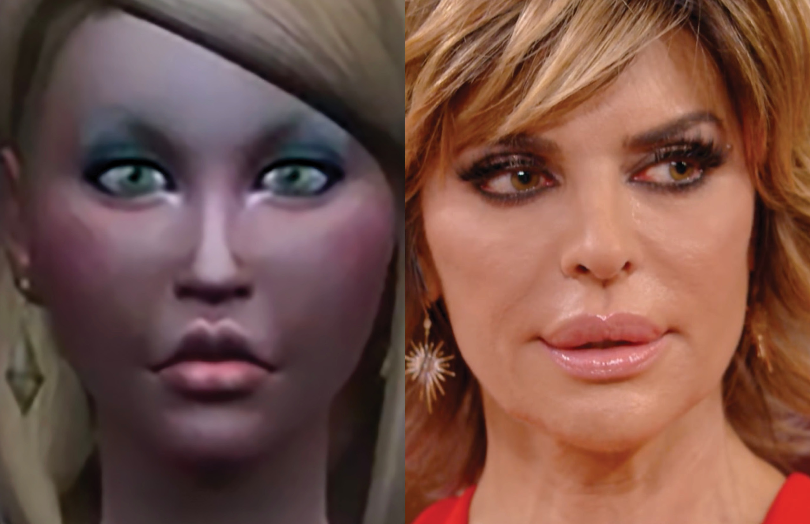

I’ve watched dozens (if not hundreds) of hours of lilsimsie’s YouTube videos and Twitch streams.
I tell myself I’m doing ‘research’ to justify this bizarre use of time, but I honestly just find her Sims videos somewhat meditative — they serve as a way to check out and escape from the stress of everyday life. Lilsimsie is fine. I find her slightly annoying (I have a hard time with adult Disney fans), and her Sims builds are pretty boring — there’s a running joke among her fans that she always builds “blue suburbans.” But clearly there’s something about her content that brings me back; maybe I have a soft spot for her.
I think at the end of the day she’s a good person (or at least trying to be); she does a lot of charity streams and matches donations. She’s particularly passionate about fundraising for St. Jude’s — she explains this is because her Dad has struggled with cancer since she was a teenager (she’s currently in her early 20’s). In one stream, she makes an off-handed comment that this is when and why she started to play The Sims so obsessively — it served as an escape from having to reckon with the mortality of a parent at such a young age.

Unitlted Sims Still #27, 2022
archival inkjet print
54 x 44 in.
I think at the end of the day she’s a good person (or at least trying to be); she does a lot of charity streams and matches donations. She’s particularly passionate about fundraising for St. Jude’s — she explains this is because her Dad has struggled with cancer since she was a teenager (she’s currently in her early 20’s). In one stream, she makes an off-handed comment that this is when and why she started to play The Sims so obsessively — it served as an escape from having to reckon with the mortality of a parent at such a young age.
Lilsimsie loves when her Sims die. She’s been doing a legacy challenge with generations of the same family for almost two years. She’s collected almost a hundred tombstones throughout this let’s play.03 Most are from Sims who have died from natural causes such as old age, but some are from Sims she’s intentionally murdered for entertainment on her live streams. In one of her streams I watched recently, titled “expanding my grave collection... | not so berry: grey,” she finds a townie Sim that was randomly generated by the game’s AI at some point with the same last name as her family tree.
Unitlted Sims Stills, 2022
archival inkjet prints
She looks to see if it’s maybe some distant cousin of a Sim she forgot about at some point, but there’s no relation to the family she’s been playing with. Lilsimsie doesn’t like this — she’s joking and her tone is light-hearted, but she decides this Sim is an imposter, and therefore must be punished. She brings the Sim to a shark infested pond, and forces him to jump in. The sharks ignore him, so she has him jump in again. And again, and again, and again. She repeats this almost a dozen times as the game plays at 3x speed, frustrated that he refuses to die. He eventually passes away from hypothermia, as he’s jumping in and out of the pond in the dead of winter. We watch the Sim struggle in the water and become limp as he slowly perishes. The grim reaper appears to watch and eventually take his corpse. Lilsimsie is laughing uncontrollably along with her Twitch chat. I watch this all play out with a pit in my stomach; this experience felt eerily real.
LEFT:
Unitlted Sims Still #8 (detail), 2022
archival inkjet print
44 x 78 in.
RIGHT:
Lisa Rinna crying
The Real Housewives of Beverly Hills, season 7 reunion, 2017
I’ve watched hundreds (if not thousands) of hours of The Real Housewives.
I’ve seen all 13 seasons of New York City, all 12 seasons of Beverly Hills, all 7 seasons of Potomac, both seasons of Salt Lake City, and 8 out of 13 seasons of Atlanta (I started this summer and I’m still catching up). My favorite episodes though are never part of the regular season (although I do love a good vacation episode blow out) but rather the multi- part reunion episodes at the end. These serve as a way to summarize the season, and for the women to confront each other months after the season has aired and they’ve seen their edits. Andy Cohen is there to host, moderate, and antagonize. There’s a strange tension at the beginning of these episodes; Andy makes small talk and asks how the housewives are doing, but there’s always a passive-aggressive politeness to their answers — they answer strategically knowing how their words and actions will be manipulated by Bravo’s puppeteer for a storyline. He then moves on to reading viewer questions, carefully edited down to the most provocative, either probing at deeply personal scandals, calling out bad behavior from the show, or attempting to instigate a fight between two (or more) cast members. Andy Cohen is masterful at orchestrating a dramatic, ridiculous, and highly entertaining spectacle.